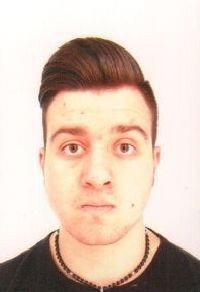

LABORATORIO DI INGEGNERIA DEI SISTEMI SOFTWARE
Introduction
Requirements
Requirement analysis
User Story 1 (requisiti opzionali non considerati)
User Story 2 (requisiti opzionali considerati)
Problem analysis
Architettura logica
Test plans
Con lo scopo di verificare che il robot soddisfi i requisiti si dovrà replicare il seguente tetplan, facendo riferimento alle user story che sono state approvate:
con riferimento al linguaggio arill introdotto in precedenza, prendiamo in considerazione le seguenti notazioni:
ARIL ::= w | s | l | r | h
w : means 'go forward', so to cover a length equals to DR
s : means 'go backward', so to cover a length equals to DR
h : means 'stop moving'
l : means 'turn left of 90'
r : means 'turn right of 90'
TestPlan 1(requisiti opzionali non considerati)
TestPlan 2(requisiti opzionali considerati)
Project
Componenti dell'applicazione
l'applicazione robotEsploratore viene pensata come un classico
programma java, rappresentato ad alto livello dall'immagine a fianco
|
da inserire:
immagine modello del progetto |
architettura dell'applicaizone
con lo scopo di rendere il codice il più possibile indipendente dalle tecnologie
utilizzate per la comunicazione con il robot del cliente, viene introdotta un'architettura stratificata
che rappresenta la forma più semplice di pattern architetturale.
Viene quindi introdotta una interfaccia che avrà un'implementazione per ogni
tipo di tecnologia utilizzabile
public interface IssOperations {
void forward( String msg ) ;
}
|
da inserire:
schema dell'architettura dell'applicazione |
| viene prevista un classe IssCommsSuportFacotry.java che fungerà da factory per creare il
corretto supporto per la comunicazione
|
da inserire:
schema della facotry
|
Testing
Deployment
Maintenance
By Luigi Maccallini
 luigi.maccallini@studio.unibo.it |
Repo GitHub